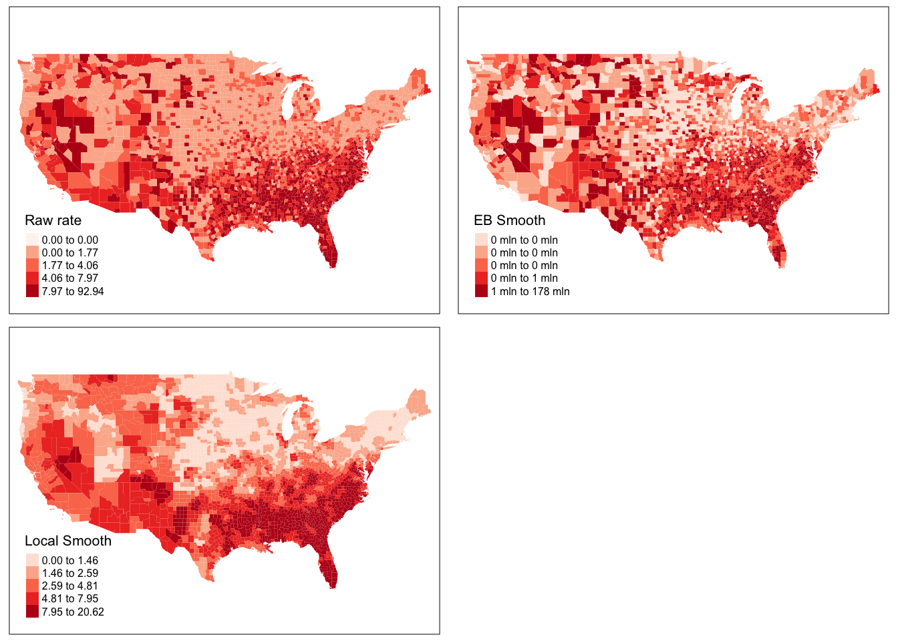
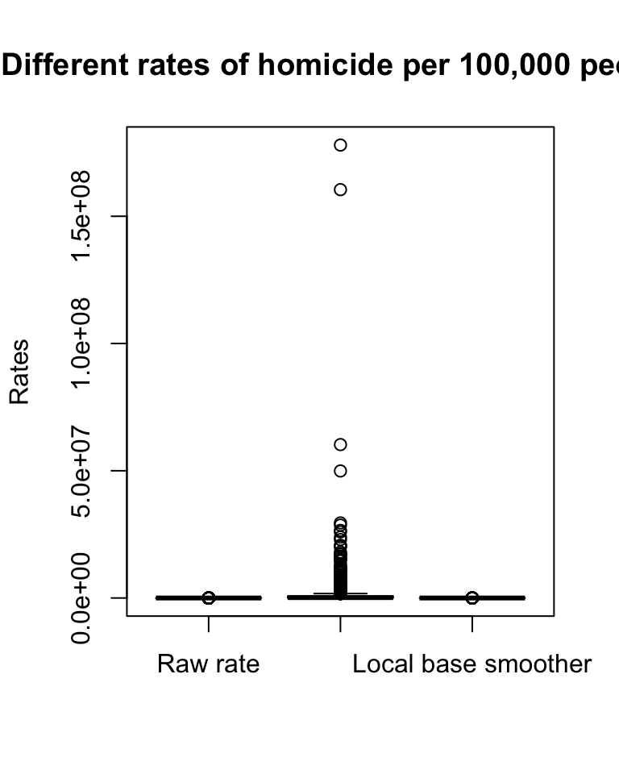
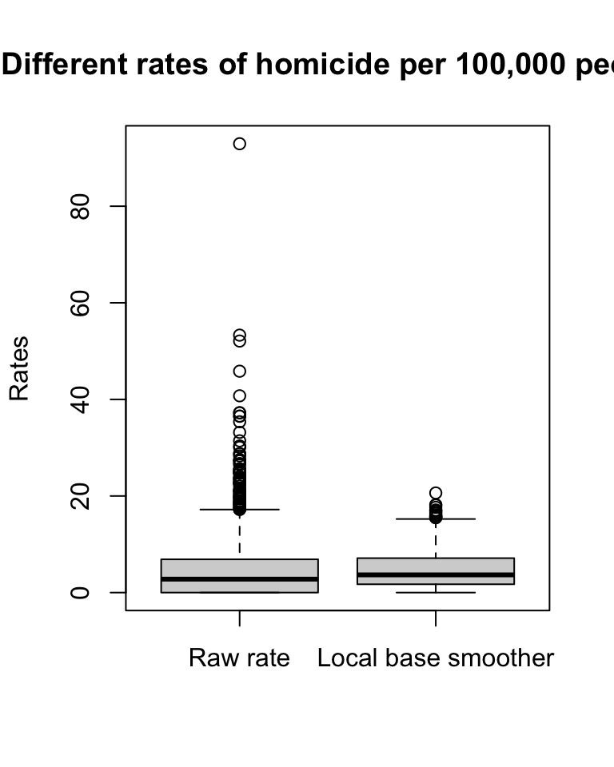
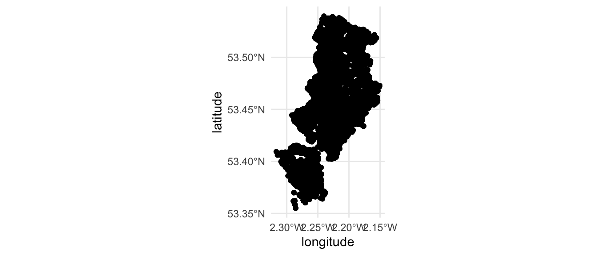
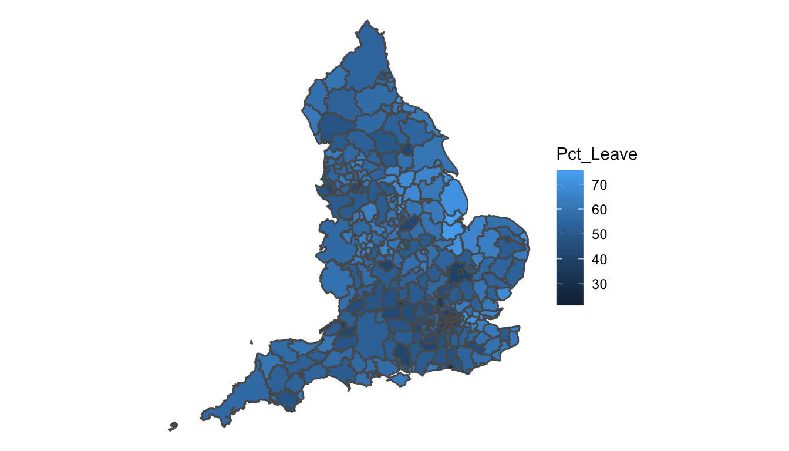

Chapter 4 Variations of thematic mapping
4.1 Introduction
In this chapter are going to discuss some additional features around thematic maps. Specifically, we will address some of the problems we confront when we are trying to use use choropleth maps, as well as some alternatives to point based maps. We will also briefly introduce the modifiable area unit problem.
The main objectives for this chapter are that by the end you will have:
- Explored binning as an alternative to point maps.
- Been introduced to alternative visualisations of polygon-level data such as
- cartograms, and
- bi-variate thematic maps.
- Gained an insight into the Modifiable Areal Unit Problem
In this chapter, we will be making use of the following libraries:
# Packages for reading data and data carpentry
library(readr)
library(dplyr)
library(tidyr)
# Packages for handling spatial data and for geospatial carpentry
library(sf)
# Packages for mapping and visualisation
library(ggplot2)
library(ggspatial)
library(cartogram)4.2 Binning points
In GIS it is often difficult to present point-based data because in many instances there are several different points and data symbologies that need to be shown. As the number of different data points grows they can become complicated to interpret and manage which can result in convoluted and sometimes inaccurate maps. This becomes an even larger problem in web maps that are able to be depicted at different scales because smaller scale maps need to show more area and more data. This makes the maps convoluted if multiple data points are included.
In many maps there are so many data points included that little can be interpreted from them. In order to reduce congestion on maps many GIS users and cartographers have turned to a process known as binning.
Binning is defined as the process of grouping pairs of locations based on their distance from one another. These points can then be grouped as categories to make less complex and more meaningful maps.
Researchers and practitioners often require a way to systematically divide a region into equal-sized portions. As well as making maps with many points easier to read, binning data into regions can help identify spatial influence of neighbourhoods, and can be an essential step in developing systematic sampling designs.
This approach to binning generates an array of repeating shapes over a user-specified area. These shapes can be hexagons, squares, rectangles, triangles, circles or points, and they can be generated with any directional orientation.
4.2.1 The Binning Process
Binning is a data modification technique that changes the way data is shown at small scales. It is done in the pre-processing stage of data analysis to convert the original data values into a range of small intervals, known as a bin. These bins are then replaced by a value that is representative of the interval to reduce the number of data points.
Spatial binning (also called spatial discretization) discretizes the location values into a small number of groups associated with geographical areas or shapes. The assignment of a location to a group can be done by any of the following methods: - Using the coordinates of the point to identify which “bin” it belongs to. - Using a common variable in the attribute table of the bin and the point layers.
4.2.2 Different Binning Techniques
Binning itself is a general term used to describe the grouping of a dataset’s values into smaller groups (Johnson, 2011). The bins can be based on a variety of factors and attributes such as spatial and temporal and can thus be used for many different projects.
4.2.2.1 Choropleth maps
You might be thinking, “grouping points into a larger spatial unit, haven’t we already done this when making choropleth maps?” In a way you are right. Choropleth maps are another type of map to that uses binning. Proportional symbol and choropleth maps group similar data points together to show a range of data instead of many individual points. We’ve covered this extensively, and is often the best approach to consider spatial grouping of your point variables, because the polygons (shapes) to which you are aggregating your points are meaningful. You can group into LSOAs because you want to show variation in neighbourhoods. Or you can group into police force areas because you want to look at differences between those units of analysis. But sometimes there is just not a geography present to meet your needs.
Let’s say you are conducting some days of action in Manchester city centre, focusing on antisocial behaviour. You are going to put up some information booths and staff them with officers to engage with the local population about antisocial behaviour. For these to be most effective, as an analyst you decide that they should go into the areas with the highest count of antisocial behaviour. You want to be very specific about where you put these as well, and so LSOA level would be too broad, you want to zoom in more. One approach can be to split central Manchester into some smaller polygons, and just calculate the number of antisocial behaviour incidents recorded in each. That way you can then decide to put your information booths somewhere inside the top 5 highest count bins.
4.2.2.2 Rectangular binning
The aggregation of incident point data to regularly shaped grids is used for many reasons such as normalizing geography for mapping or to mitigate the issues of using irregularly shaped polygons created arbitrarily (such as county boundaries or block groups that have been created from a political process). Regularly shaped grids can only be comprised of equilateral triangles, squares, or hexagons, as these three polygon shapes are the only three that can tessellate (repeating the same shape over and over again, edge to edge, to cover an area without gaps or overlaps) to create an evenly spaced grid.
Rectangular binning is the simplest binning method and as such it heavily used. However, there are some reasons why rectangular bins are less preferable over hexagonal bins. Before we cover this, let’s have a look at hexagonal bins.
4.2.2.3 Hexagonal binning
In many applications binning is done using a technique called hexagonal binning. This technique uses hexagon shapes to create a grid of points and develops a spatial histogram that shows different data points as a range or group of pairs with common distances and directions. In hexagonal binning the number of points falling within a particular rectangular or hexagon in a gridded surface is what makes the different colors to easily visualize data (Smith, 2012). Hexagonnal binning was first developed in 1987 and today “hexbinning” is conducted by laying a hexagonal grid on top of 2-dimensional data (Johnson, 2011). Once this is done users can conduct data point counts to determine the number of points for each hexagon (Johnson, 2011). The bins are then symbolized differently to show meaningful patterns in the data.
So how can we use hexbinning to solve our antisocial behaviour days of action task? Well let’s say we split Manchester city centre into hexagons, and count the number of antisocial behaviour instances in these. We can then identify the top hexagons, and locate our booths somewhere within these.
First make sure you have the appropriate packages loaded. Also let’s get some data. You could go and get this data yourself from police.uk, we’ve been through all the steps for downloading data from there a few times now. But for now, we have a tidied set of data ready for you. This data is one year’s worth of antisocial behaviour from the police.uk data, from May 2016 to May 2017, for the borough of Manchester.
The data are included in the supplementary material, and also available on our GitHub page.
manchester_asb <- read_csv("data/manchester_asb.csv")This is currently just a text dataframe, so we need to let R know that actually this is a spatial object, who’s geometry can be find in its longitude and latitude coordinates. As we have long/lat we can assure it’s in WGS 84 projection.
ma_spatial <- st_as_sf(manchester_asb,
coords = c("Longitude", "Latitude"),
crs = 4326,
agr = "constant")Now one thing that this does is it consumes our Long and Lat columns into a geometry attribute. This is generally OK, but for the binning we will do, we would like to have them as separate coordinates. To do this, we can use the st_coordinates() function from the sf package. This function extracts the longitude and latitude from the geometry within the sf object, in this case “ma_spatial” object. For example, if we look at the first row:
ma_spatial %>%
slice(1) %>%
st_coordinates()## X Y
## 1 -2.228809 53.53493We have our longitude (X) and latitude (Y). We can select the first and second element of this to get only one or the other. To go through our whole dataframe, we can use the mutate() function, and assign each element to a longitude and latitude column respectively:
ma_spatial <- ma_spatial %>%
mutate(longitude = st_coordinates(.)[,1],
latitude = st_coordinates(.)[,2])As a first step, we can plot asb in the borough of Manchester using simple ggplot, as demonstrated in Chapter 1. We can plot our points first:
ggplot(ma_spatial, aes(x = longitude, y = latitude)) +
geom_sf() +
theme_minimal()
We see our nice map of Manchester, as outlined by ASB across the Local Authority. To create a bin of this map, what we do, is generate a grid of tessellating map of our desired shape, and then count the number of points which fall into each one of these shapes. We can use `ggplot for this. It is such a great tool for building visualisations, because you can apply whatever geometry best suits your data. So for us to just have a look at the hexbinned version of our point data of antisocial behaviour, we can use the stat_binhex() function as a layer on our ggplot object. We can also recreate the thematic map element, as we can use the frequency of points in each hex to shade each hexbin from white (least number of incidents) to red (most number of incidents). So let’s have a go:
#define data and variables for x and y axes
ggplot(ma_spatial, aes(longitude, latitude)) +
# plot geometry with geom_sf()
geom_sf() +
#add binhex layer (hexbin) set bin size (in degrees)
stat_binhex(binwidth = c(.015, .01)) +
#add shading based on number of ASB incidents
scale_fill_gradientn(colours = c("white","red"),
name = "Frequency") +
theme_void() 
Neat, but doesn’t quite tell us where that really dark hexbon actually is. So it would be much better if we could do this with a basemap as the background. For this we use the function annotation_map_tile() from the ggspatial package. We can also set the opacity of the binhex layer, so we can see our basemap, with the alpha parameter.
ggplot(ma_spatial, aes(x = longitude, y = latitude)) +
annotation_map_tile() +
stat_binhex(binwidth = c(.015, .01), alpha=0.7) + # set opacity
scale_fill_gradientn(colours = c("white","red"),
name = "Frequency") +
theme_void() ## Zoom: 10
Adding this basemap provides us with a bit more context. And combined with the hexbin map, it is much easier to see where in Manchester borough Antisocial Behaviour concentrates (as opposed to with the point map!). Above we used a hexagon shape for our binning, however you might choose other shapes as well. I will illustrate in a moment the approach to use rectangular binning, but first, I want to highlight why hexagon might still be your ideal choice. Here are some thoughts:
- Hexagons reduce sampling bias due to edge effects of the grid shape. The edge effects of bounded space refers to the problem of truncated data that can skew the results of subsequent analyses (we’ll get to this in the next section). This is related to the low perimeter-to-area ratio of the shape of the hexagon. A circle has the lowest ratio but cannot tessellate to form a continuous grid. Hexagons are the most circular-shaped polygon that can tessellate to form an evenly spaced grid.
- This circularity of a hexagon grid allows it to represent curves in the patterns of your data more naturally than square grids.
- When comparing polygons with equal areas, the more similar to a circle the polygon is, the closer to the centroid the points near the border are (especially points near the vertices). This means that any point inside a hexagon is closer to the centroid of the hexagon than any given point in an equal-area square or triangle would be (this is due to the more acute angles of the square and triangle versus the hexagon).
- Hexagons are preferable when your analysis includes aspects of connectivity or movement paths. Due to the linear nature of rectangles, fishnet grids can draw our eyes to the straight, unbroken, parallel lines which may inhibit the underlying patterns in the data. Hexagons tend to break up the lines and allow any curvature of the patterns in the data to be seen more clearly and easily. This breakup of artificial linear patterns also diminishes any orientation bias that can be perceived in fishnet grids.
- If you are working over a large area, a hexagon grid will suffer less distortion due to the curvature of the earth than the shape of a fishnet grid.
- Finding neighbors is more straightforward with a hexagon grid. Since the edge or length of contact is the same on each side, the centroid of each neighbor is equidistant. However, with a fishnet grid, the Queen’s Case (above/below/right/left) neighbor’s centroids are N units away, while the centroids of the diagonal (Rook) neighbors are farther away (exactly the square root of 2 times N units away).
- Since the distance between centroids is the same in all six directions with hexagons, if you are using a distance band to find neighbors or are using the Optimized Hot Spot Analysis, Optimized Outlier Analysis or Create Space Time Cube By Aggregating Points tools, you will have more neighbors included in the calculations for each feature if you are using hexagonal grid as opposed to a fishnet grid.

To illustrate the differences of different approaches, let’s see what this map would look like with:
- rectangular binning:
ggplot(ma_spatial, aes(x = longitude, y = latitude)) +
annotation_map_tile() +
stat_bin2d(binwidth = c(.015, .01), alpha=0.7) +
scale_fill_gradientn(colours = c("white","red"),
name = "Frequency") +
theme_void()## Zoom: 10
- hexagonal binning:
ggplot(ma_spatial, aes(x = longitude, y = latitude)) +
annotation_map_tile() +
stat_binhex(binwidth = c(.015, .01), alpha=0.7) +
scale_fill_gradientn(colours = c("white","red"),
name = "Frequency") +
theme_void()## Zoom: 10- a simple “heatmap” (we will discuss these more thoroughly in Chapter 6):
ggplot(ma_spatial, aes(x = longitude, y = latitude)) +
annotation_map_tile() +
stat_density2d(aes(fill = ..level.., # value corresponding to
# discretized density estimates
alpha = ..level..),
geom = "polygon") + # creates the bands of
# different colours
## Configure the colours, transparency and panel
scale_fill_gradientn(colours = c("white","red"),
name = "Frequency") +
theme_void()## Zoom: 11
4.2.3 Benefits of Binning
Because of the plethora of data types available and the wide variety of projects being done in GIS, binning is a popular method for mapping complex data and making it meaningful. Binning is a good option for map makers as well as users because it makes data easy to understand and it can be both static and interactive on many different map scales. If every different point were shown on a map it would have to be a very large scale map to ensure that the data points did not overlap and were easily understood by people using the maps. According to Kenneth Field, an Esri Research Cartographer:
“Data binning is a great alternative for mapping large point-based data sets which allows us to tell a better story without interpolation. Binning is a way of converting point-based data into a regular grid of polygons so that each polygon represents the aggregation of points that fall within it.”
By using binning to create categories of data maps are easier to understand, more accurate and more visually appealing. Hexbin plots can be viewed as an alternative to scatter plots. The hexagon-shaped bins were introduced to plot densely packed sunflower plots. They can be used to plot scatter plots with high-density data.
4.3 Transforming polygons
When you have meaningful spatial units of analysis in your polygons, for example you are interested specifically in Local Autorities, it might make sense to stick with what we did last week, and aggregate the points into these polygons to create thematic maps. However, while thematic maps are an accessible and visually appealing method for displaying spatial information, they can also be highly misleading. Irregularly shaped polygons and large differences in the size of areas being mapped can introduce misrepresentation. The message researchers want to get across might be lost, or even worse, misdirect the viewers to erroneous conclusions. Field and Dorling (2016) provide a helpful discussion of the problem illustrating the case with UK election maps. It is worth reading.
Fortunately, there are many methods in R to enhance the legibility of geographic information and the interpretability of what it is trying to be communicated. Selecting the appropriate method might depend on the research question being posed (e.g. clustering) and the data itself. Even once a method has been selected, there are different ways of operationalising them. Here we focus on cartograms. A cartogram is is “a thematic map of a set of features (countries, provinces, etc.), in which their geographic size is altered to be directly proportional to a selected ratio-level variable, such as travel time, population, or GNP” (Wikipedia).
Let’s explore this using the example of the results of the 2016 EU referendum at Local Authority level, where remain areas clustered in London. A simple thematic map does not necessarily communicate this well because Local Authorities are both small and densely populated in London.
You can download the full set of EU referendum result data as a csv from the Electoral Commission webside. We’ve already done this and included in our data folder. Let’s read it straight into R:
eu_ref <- read_csv("data/EU-referendum-result-data.csv")We also need a spatial object to join this to. See the appendix on how to source boundary data for more detail on how we can find relevant boundary data for our analyses. For now, we can use the data which comes with this book from the supplementary materials. Specifically the shapefile for English Local Authorities. This file is called england_lad_2011_gen.shp and is found in the England_lad_2011_gen subfolder.
las <- st_read("data/England_lad_2011_gen/england_lad_2011_gen.shp")## Reading layer `england_lad_2011_gen' from data source `/Users/reka/Desktop/crime_mapping/crime_mapping/data/England_lad_2011_gen/england_lad_2011_gen.shp' using driver `ESRI Shapefile'
## Simple feature collection with 326 features and 4 fields
## Geometry type: MULTIPOLYGON
## Dimension: XY
## Bounding box: xmin: 82644.8 ymin: 5349.399 xmax: 655976.9 ymax: 657599.5
## Projected CRS: OSGB 1936 / British National GridWe can now join the EU referendum data using the attribute operation left_join(), as we have illustrated in detail in Chapter 1.
eu_sf <- left_join(las, eu_ref, by = c("name" = "Area"))
#make sure we are in British National Grid Projection
eu_sf <- st_transform(eu_sf, 27700)Now we can have a look at these data:
ggplot() +
geom_sf(data = eu_sf, aes(fill = Pct_Leave)) +
theme_void()
The Local Authorities vary greatly in their shape and size, and in the case of smaller LAs the result is barely visible. In this case, we cannot really see what was happening with the EU referendum in London, for example. This is the sort of situationwhere augmenting our polygons may be handy. Cartograms offer one way to achieve this.
There are different types of cartograms. Density-equalizing (contiguous) cartograms are your traditional cartograms. In density-equalizing cartograms, map features bulge out a specific variable. Even though it distorts each feature, it remains connected during its creation. On the other hand, you can have Non-Contiguous Cartograms, where features in non-contiguous cartograms don’t have to stay connected. Finally, Dorling Cartograms (named after professor Danny Dorling) use shapes like circles and rectangles to depict area. These types of cartograms make it easy to recognize patterns.
We can explore cartograms using the cartogram package. Within that we will use the cartogram() function. In this function, we will specify two parameters: 1 - shp =, which asks for the shape file (it can be a SpatialPolygonDataFrame or an sf object), and 2 - weight =, which asks for the variable which it should use to distort the polygon by.
In our data set we have a variable “Electorate” which refers to the total number of registered electors in that Local Authority. It serves to give an indicator of the total number of people who were eligible to vote in the referendum. We can use this variable to distort our polygons and create our cartogram.
eu_cartogram <- cartogram(eu_sf, "Electorate")If you run this, it might take a long time. This function, while it looks nice and simple, is actually very computationally taxing for your computer. For those interested, you may like to take the time while R works this out for you to read up on the maths behind this transformation in Dougenik, Chrisman, and Niemeyer (1985) (it’s got a fun name: a rubber sheet distortion algorithm!).
I do have a tip for you if you want to make sure the process does not take too long. You can set another parameter in the cartogram function which is the itermax= parameter. This specifies the maximum number of iterations we are happy to sit through for our cartogram. If you do not specify it’s set to 15. Let’s set to 5 for the sake of speed:
# construct a cartogram using the percentage voting leave
eu_cartogram <- cartogram_cont(eu_sf, "Electorate", itermax = 5)This will be faster (but may not result in the best possible cartogram output). Once your cartogram has been created, you can now plot again the referendum results, but using the electorate to change the size of the Local Authority:
ggplot() +
geom_sf(data = eu_cartogram, aes(fill = Pct_Leave)) +
theme_void()
We can now see London much better, and see that darker coloured cluster where much smaller percentage of people voted leave. We can eye-ball where London may be, as this continuous area cartogram tries to maintain some fidelity to our original shapes, while weighting them by some variable of interest, in our case the electorate in each Local Authority.
4.3.1 Dorling Cartogram
While the continuous area cartogram we created above tries to maintain some fidelity to our original shapes, other approaches take more freedom when applyign transformations. Sometimes, maintaining a resemblance to the original geometry of each polygon may not be important. In that case, you might be interested in creating a Dorling cartogram.
# construct a Dorling cartogram using the percentage voting leave
eu_dorling_cartogram <- cartogram_dorling(eu_sf, "Electorate")ggplot() +
geom_sf(data = eu_dorling_cartogram, aes(fill = Pct_Leave)) +
theme_void()This map has transformet each Local Authority’s shape into a circle, where the radius is determined as a function of the variable we supplied, which is our Electorate in each LA. The shading here is again provided by the percentage of people who voted to leave in each area, with lighter values indicating more people voting to leave, and darker values indicating fewer people voting to leave the EU. However, the relations of these Local Authorities is tough to maintain here, and I may be hard-pressed to identify London’s boroughs out of this collection. However, Dorling cartograms may have their use and place. You may read up more about them in Dorling (1996) .
4.4 Bivariate Maps
Usually in your thematic maps you are mapping one variable. For example in the maps above, we mapped the distribution of the percepntage who voted to leave the European Union (the Pct_Leave variable). But occasionally, you might want to use your map to illustrate the relationship between two variables. In this case, you may want to create a Bivariate Choropleth Map. Bivariate choropleths follow the same concept as the univariate ones (which display only one variable), except they show two variables at once. This is achieved through the creative use of colour.
We first came across the idea of bivariate choropleth maps from the blog of Stevens (2015). I recommend having a read as he discusses in great detail how to develop the colour schemes necessary for these maps. The idea is that there are two main colours, each one representing gradual change in one of our two variables of interest. Then, these two colours are combined to create an overlapping colour scheme.
The process itself is not too complicated. We start with binning our two variables into classes. If we bin variable 1 into \(n\) classes, and then again variable 2 into \(n\) classes, then when we compare them across one another to create our bivariate map, we will end up with \(n^2\) classes. For example, if we bin both variables into 3 classes (low, medium, high), then when displaying them together, we will have 9 classes to visualise. Stevens (2015) blog illustrates with nice visuals, so I recommend having a look. However the practical example is in QGIS, and here we are working in R. There had been adaptations into R (eg see Grossenbacher (2019)) which we can borrow from here too.
Creating the map boils down to 5 key steps. First, we take our two variables of interest, and create bins. Second, we create a new variable, which we will use for the shading. Third we create our colour scheme. Fourth, we join this to our sf object. And, finally we map! Let’s go through these steps now. Using the example of voting to leave the EU.
It may be an interesting question to look into not only how the voting outcome was distributed (Pct_Leave) but how this varies with voter turnout (Pct_Turnout). We might be interested in areas with high turnout and high or percentage on voting to leave, as these may be areas where people felt passionately. On the other hand, other areas may have had low turnout, which may have influenced the result, and in those places, were people who did turn out voting to leave or remain? These are the kinds of questions we can answer with a bivariate map.
4.4.1 Step 1: Bin our variables of interest
We are interested in two key variables, Pct_Leave - the percentage of people who voted to leave the EU, and Pct_Turnout - the percentage of the electorate who actually voted. These are both numeric continuous variables. In order to create our bivariate choropleth map, we have to bin these values into \(n\) discrete categories. Here let’s go with \(n = 3\).
We can use the cut() and the quantile() functions in base R to class our variable into three quantiles. The quantile() function identifies the sample quantiles in a continuous variable. We need to include the parameters x=: the numeric vector whose sample quantiles are wanted (in this case our variables Pct_Leave and Pct_Turnout), and probs=: numeric vector of probabilities with values in [0,1]. We can use the sequence generator function seq() to generate these from 0 to 1, by the increment of \(\frac{1}{3}\) for 3 groups.
So first, let’s create the breaks first for the Pct_Leave variable.
leave_breaks <- quantile(eu_sf$Pct_Leave,
probs = seq(0,1, by = 1/3), # probabilities
na.rm=TRUE, # remove NAs
names=TRUE, # keep names attribute
include.lowest=TRUE) # include value equal to
# lowest ‘breaks’ value And then the same again but for the turnout variable Pct_Turnout.
tunrout_breaks <- quantile(eu_sf$Pct_Turnout,
probs = seq(0,1, by = 1/3),
na.rm=TRUE,
names=TRUE,
include.lowest=TRUE)We can have a look at the output:
leave_breaks## 0% 33.33333% 66.66667% 100%
## 21.38000 51.72000 59.12333 75.56000The results are the cutoff values which we want to use to “cut” our numeric variable. We do this with the cut() function, where we specify again what to cut (the variables Pct_Leave and Pct_Turnout), and the breaks at which to cut (the objects we created above, leave_breaks and tunrout_breaks):
eu_sf <- eu_sf %>%
mutate(leave_quantiles = cut(Pct_Leave,
breaks = leave_breaks),
turnout_quantiles = cut(Pct_Turnout,
breaks = tunrout_breaks))We have two resulting variables, leave_quantiles and turnout_quantiles which classify each one of our observations into one of these quartiles for both the variables. In the next step, we use these to create a new variable.
4.4.2 Step 2: New variable
This step is really quite easy. What we want to do is create a new variable, this time let’s call it group, which tells us which quartile the specific Local Authority (each row) falls into. By applying the as.numeric() function we translate the ranges of the quartile into their label (i.e. 1, 2, or 3rd quartile). We do this for both variables, and paste them together using the paste() function, and the separator “-”:
eu_sf <- eu_sf %>%
mutate(group = paste(
as.numeric(turnout_quantiles), "-",
as.numeric(leave_quantiles))
)We now have a new column, called group, which tells us for each Local Authority, which quartile it falls into for each variable. For example, a value of “1 - 1” means the Local Authority belongs to the first quartile in both variables. This area would be considered to have low percent voting leave, and also low turnout. On the other hand, “3 - 1” means that there was high turnout, but a low percentage voted to leave. We use this variable to assign the appropriate colour for our colour scheme for each of the \(3^2\) (9) combinations.
4.4.3 Step 3: Create colour scheme
Picking a colour scheme which reflects both gradual change in each individual variable, and the combined change in both is not an easy task! Luckily Stevens (2015) has created some scale recommendations for us to choose from. I copy two of them below, but you can see the blog for another 2 options.
In this code below, I simply specify for each of the 9 values of the variable created in the previous step (“1 - 1,” “1 - 2,” “1 - 3,” “2 - 1,” … “3 - 3” ) an associated colour using the relevant hex code.
library(tibble)
bivariate_color_scale_1 <- tibble(
"3 - 3" = "#574249", # high - high
"2 - 3" = "#985356",
"1 - 3" = "#c85a5a", # low - high
"3 - 2" = "#627f8c",
"2 - 2" = "#ad9ea5", # medium - medium
"1 - 2" = "#e4acac",
"3 - 1" = "#64acbe", # high - low
"2 - 1" = "#b0d5df",
"1 - 1" = "#e8e8e8" # low - low
) %>%
gather("group", "fill_col")
bivariate_color_scale_2 <- tibble(
"3 - 3" = "#3b4994", # high - high
"2 - 3" = "#5698b9",
"1 - 3" = "#5ac8c8", # low - high
"3 - 2" = "#8c62aa",
"2 - 2" = "#a5add3", # medium - medium
"1 - 2" = "#ace4e4",
"3 - 1" = "#be64ac", # high - low
"2 - 1" = "#dfb0d6",
"1 - 1" = "#e8e8e8" # low - low
) %>%
gather("group", "fill_col")You can have a look at both these, and see which one you like. Feel free to use either in your future bivariate mapping adventures. Or construct your own, perhaps following the two additional ones provided by Stevens (2015), or some entirely news ones you may have constructued.
4.4.4 Step 4: Join colour scheme
Now that we have a colour scheme, we can join to the spatial object, using left_join(). The common element is the group variable, so with this approach, we join the relevant colour to each value of group in that column. Let’s join bivariate_color_scale_2, the second of the two we created above.
eu_sf <- left_join(eu_sf, bivariate_color_scale_2, by = "group")We now have an additional column in our eu_sf dataframe which
4.4.5 Step 5: Create legend
The legend is a little tricky, as we need to separate out the values into separate Leave and Turnout columns. We can achieve this with the separate() function
# separate the groups
bivariate_color_scale <- bivariate_color_scale_2 %>%
separate(group,
into = c("Pct_Turnout", "Pct_Leave"), sep = " - ")Then to create the legend, we actually build a ggplot() object. This genius bit of code is borrowed from Grossenbacher (2019) implementation of bivariate choropleth maps.
legend <- ggplot() +
geom_tile( data = bivariate_color_scale,
aes(x = Pct_Turnout, y = Pct_Leave, fill = fill_col)) +
scale_fill_identity() +
labs(x = "Higher % turnout ->",
y = "Higher % voted leave ->") +
theme(axis.title = element_text(size = 6)) + # makes text small for
# adding legend to map
coord_fixed() # forces a specified ratio to create quadratic tilesThis code returns the legend as a chart itself. Have a look what it looks like:
legend
4.4.6 Step 6: Map
Now finally we put it all on the map. For the choropleth map, we use our variable fill_col which contains the matched colour to the group that each observation belongs to. We pass this in the familiar geom_sf() geometry and use the fill= parameter to colour the Local Authorities according to their turnout / voted leave combination. We also have to add the scale_fill_identity() function, as the values in the fill_col variable are actually the hex codes for the colour which we use to shade the Local Authorities.
map <- ggplot(eu_sf) +
geom_sf(aes( fill = fill_col)) +
scale_fill_identity() +
theme_void()Finally, to display the legend and the map together, we can use the ggdraw() and draw_plot() functions from the cowplot package.
library(cowplot)
ggdraw() +
draw_plot(map, 0, 0, 1, 1) +
draw_plot(legend, 0.05, 0.075, 0.2, 0.2) 
This map may now be able to provide insight into spatial patterns in turnout and voting to leave. For example, in the South you can see lots of pink, representing areas of high turnout and low % voting to leave the EU. You can also spot the dark blue areas, these are Local Authorities which saw high voter turnout and a high proportion voting to leave.
Overall these maps can help visualise two variables on one map, and motivate discussion about relationships between variables in different places.
4.5 A note of caution: MAUP
Now that we’ve shown you how to do a lot of spatial crime analysis, we wanted to close with some words of caution. Remember that everything you’ve learned here are just tools that you will be applying to data you are working with, but it’s up to you, the researcher, the analyst, the domain expert, to apply and use these with careful consideration and cautions. This discussion is very much part of spatial crime analysis, and an important field of thought.
We borrow here from George Renghert and Brian Lockwood:
When spatial analysis of crime is conducted, the analyst should not ignore the spatial units that data are aggregated into and the impact of this choice on the interpretation of findings. Just as several independent variables are considered to determine whether they have statistical significance, a consideration of multiple spatial units of analysis should be made as well, in order to determine whether the choice of aggregation level used in a spatial analysis can result in biased findings. Rengert and Lockwood (2009)
In particular, they highlight four main issues inherent in most studies of space:
- issues associated with politically bounded units of aggregation,
- edge effects of bounded space
- the modifiable aerial unit problem (MAUP)
- and ways in which the results of statistical analyses can be manipulated by changes in the level of aggregation.
4.5.0.1 Scale
The scale problem involves results that change based on data that are analyzed at higher or lower levels of aggregation (Changing the number of units). For example, evaluating data at the state level vs. Census tract level.
The scale problem has moved to the forefront of geographical criminology as a result of the recent interest in small-scale geographical units of analysis. It has been suggested that smaller is better since small areas can be directly perceived by individuals and are likely to be more homogenous than larger areas. - Gerell, Manne. “Smallest is better? The spatial distribution of arson and the modifiable areal unit problem.” Journal of quantitative criminology 33.2 (2017): 293-318.
4.5.0.2 Zone
The zonal problem involves keeping the same scale of research (say, at the state level) but changing the actual shape and size of those areas.
The basic issue with the MAUP is that aggregate units of analysis are often arbitrarily produced by whom ever is in charge of creating the aggregate units. A classic example of this problem is known as Gerrymandering. Gerrymandering involves shaping and re-shaping voting districts based on the political affiliations of the resident citizenry.
The inherent problem with the MAUP and with situations such as Gerrymandering is that units of analysis are not based on geographic principles, and instead are based on political and social biases. For researchers and practitioners the MAUP has very important implications for research findings because it is possible that as arbitrarily defined units of analysis change shape findings based on these units will change as well.
When spatial data are derived from counting or averaging data within areal units, the form of those areal units affects the data recorded, and any statistical measures derived from the data. Modifying the areal units therefore changes the data. Two effects are involved: a zoning effect arising from the particular choice of areas at a given scale; and an aggregation effect arising from the extent to which data are aggregated over smaller or larger areas. The modifiable areal unit problem arises in part from edge effect. If you’re interested, in particular about politics and voting, you can read this interesting piece to learn more about gerrymandering
4.5.1 Why does MAUP matter?
The practical implications of MAUP are immense for almost all decision-making processes involving GIS technology, since with the availability of aggregated maps, policy could easily focus on issues and problems which might look different if the aggregation scheme used were changed.
All studies based on geographical areas are susceptible to MAUP. The implications of the MAUP affect potentially any area level data, whether direct measures or complex model-based estimates. Here are a few examples of situations where the MAUP is expected to make a difference, taken from Gerell (2017).
- The special case of the ecological fallacy is always present when Census area data are used to formulate and evaluate policies that address problems at individual level, such as deprivation. Also, it is recognised that a potential source of error in the analysis of Census data is ‘the arrangement of continuous space into defined regions for purposes of data reporting’
- The MAUP has an impact on indices derived from areal data, such as measures of segregation, which can change significantly as a result of using different geographical levels of analysis to derive composite measures .
- The choice of boundaries for reporting mortality ratios is not without consequences: when the areas are too small, the values estimated are unstable, while when the areas are too large, the values reported may be over-smoothed, i.e. meaningful variation may be lost.
4.5.2 What can we do?
Most often you will just have to remain aware of the MAUP and its possible effects. There are some techniques, that can help you address these issues, and the chapter pointed out at the beginning of this section is a great place to start to explore these. It is possible to use also an alternative, zone-free approach to mapping these crime patterns, perhaps by using kernel density estimation. Here we model the relative density of the points as a density surface - essentially a function of location (x,y) representing the relative likelihood of occurrence of an event at that point. We have covered KDE elsewhere in this course.
For now, it’s enough that you know of, and understand the MAUP and its implications. Always be smart when choosing your appropriate spatial unit of analysis, and when you use binning of any form, make sure you consider how and if your conclusions might change compared to another possible approach.
4.6 Summary and further reading
In this chapter we explored the use of binning points into hexbins and rectangular grids, as well as transforming polygons in order to enhanche the legibility of your maps. For some more information on binning see Johnson (2011). For transforming polygons, read Tobler (2004) and Nusrat and Kobourov (2016). We can also suggest a read of Langton and Solymosi (2018) and check out this video from SAGE methods Solymosi (2021).
To read up more on the Modifiable Areal Unit Problem (MAUP) in general, we recommend the original Openshaw (1981). For some criminology/ crime mapping specific reading try Rengert and Lockwood (2009) and Gerell (2017).